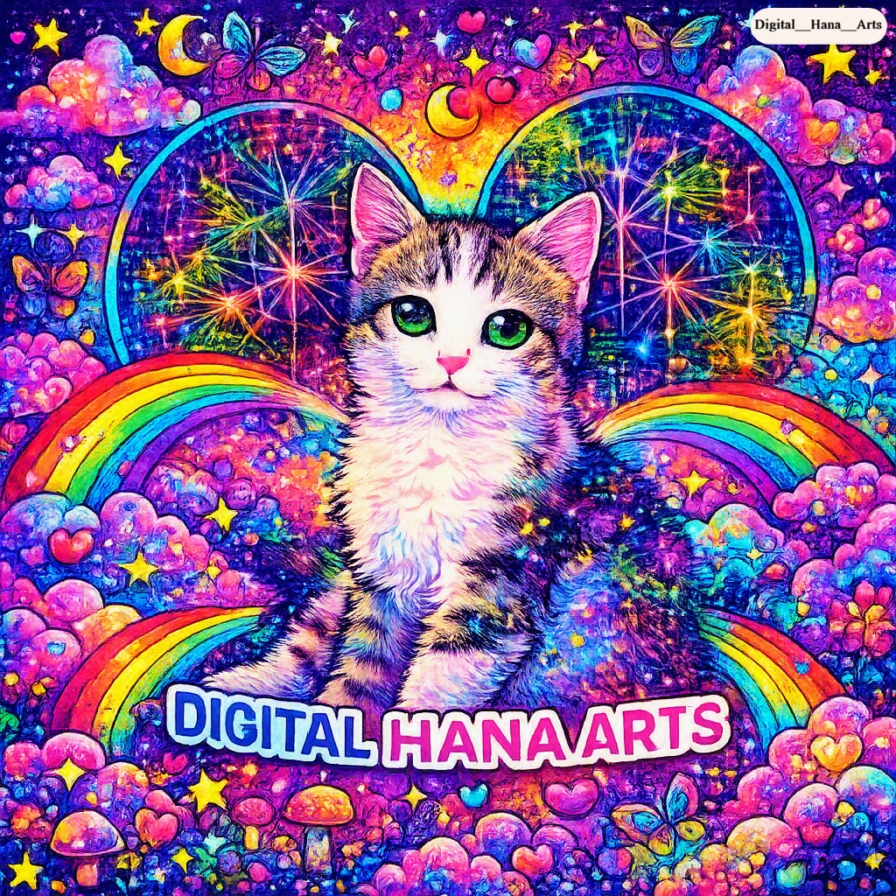

Um estúdio no
interstício.
Somos uma oficina experimental operando na fronteira entre a tecnologia e a expressão artística.
A tecnologia é matéria-prima.
Artes Digitais Hana começou como um experimento mental: se tratarmos a computação como tinta e tela, como tijolo e argamassa, o que podemos construir?
A resposta nos levou à interseção de quatro domínios — Arte, Dados, IA e Blockchain — e, subsequentemente, à previsão inteligente de mercados.
Não somos apenas um "estúdio de arte" nem uma "empresa de tecnologia". Estamos exatamente onde ferramenta e artefato se tornam um só.
Devore a cultura. Cuspa código.
Inspirados pelo Movimento Antropofágico brasileiro de 1928, nós devoramos as influências estrangeiras — o cyberpunk, o dadá, a inteligência artificial — e as digerimos para criar algo visceralmente nosso.
Não fazemos apenas arte generativa. Nós nos recusamos a aceitar a dicotomia entre o técnico e o orgânico. Nosso código é tropical, nosso algoritmo tem ritmo.
